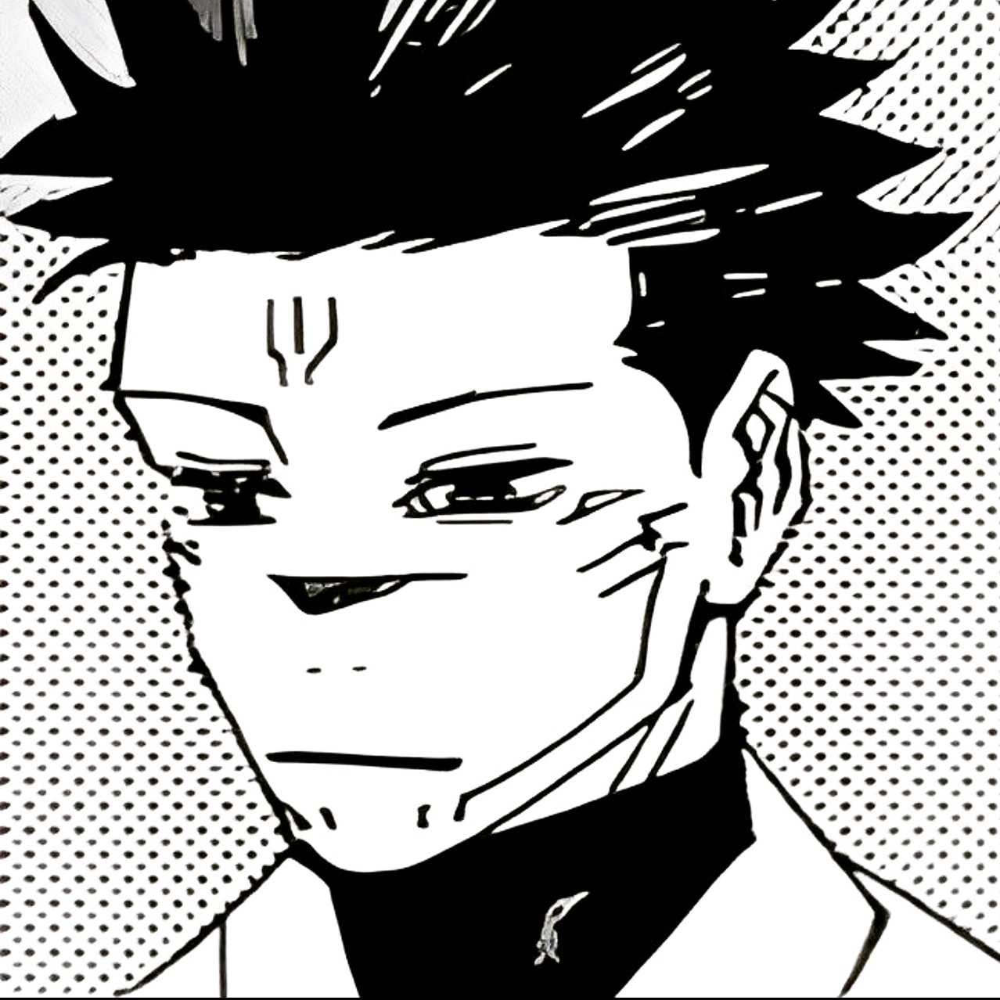

My Favorite Captures
-

Vasto Lorde Ichigo — The embodiment of fury, raw instinct, and desperation in motion.
-

Mark (JJK style) — A stoic calm within the chaos. The quiet before the storm.
"Photography is a way of feeling, touching, and of loving."
This site is a visual tribute to chaos, intensity, and the raw emotions captured through manga-style photography. Each image represents a snapshot of energy—frozen forever.
Vasto Lorde Ichigo — The embodiment of fury, raw instinct, and desperation in motion.
Mark (JJK style) — A stoic calm within the chaos. The quiet before the storm.